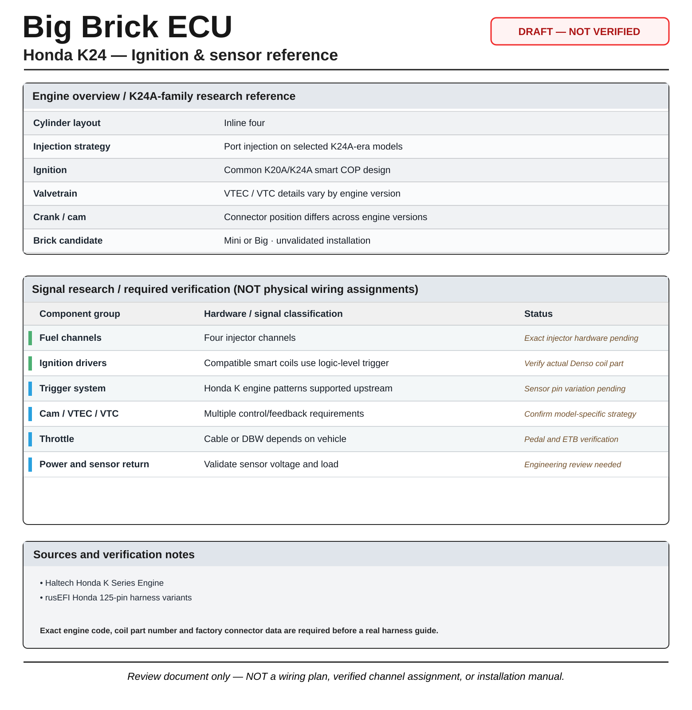

Honda K24
Honda K-series four-cylinder platform; engine code, throttle version and VTC arrangement matter.
No verified Brick ECU installation or pin mapReview the engine's ignition hardware and sensor variants alongside the questions still requiring verification. This document does not supply an approved harness pinout.

| Engine family | Honda K24 |
|---|---|
| Cylinders | 4 |
| ECU evaluation | Mini or Big candidate |
| Brick ECU harness tested | No validation supplied |
| Vehicle variant | Must be specified before mapping |
rusEFI documents HONDA_K_CRANK_12_1 and Honda K-family VVT support.
Read relevant rusEFI technical reference
| K20A / K24A family | Haltech covers K20A/K24A as Honda K-series variants and confirms original K20 direct-fire coils have integrated ignition modules. Factory K24 coil type must be checked against its exact part number and generation. |
|---|---|
| Ignition-output class | For confirmed internal-igniter K-series coils, 5 V logic outputs are the relevant class; never equate coil-pin count alone with igniter type. |
| Crank/cam sensor variation | Haltech distinguishes K20 from K24 crank-sensor connector pin arrangement. The K-family's hall-based trigger descriptions must not be copied as an assumed common terminal map. |
Research sources
This section establishes engine-family facts only. No OEM-to-Brick physical pin mapping or driver-to-coil compatibility is certified.
4 injector and ignition channels; crank/cam; appropriate VTC control; temperatures, MAP and throttle signals.
This is a high-level planning inventory only; it is not a wiring list or validated control configuration.
| Component group | ECU pins | Vehicle cavities | Status |
|---|---|---|---|
| ECU supply, protection and grounding | Not assigned | Not verified | Pending |
| Crank / cam sensors | Not assigned | Not verified | Pending |
| Temperature and pressure sensors | Not assigned | Not verified | Pending |
| Injectors and injection mode | Not assigned | Not verified | Pending |
| Ignition and coil type | Not assigned | Not verified | Pending |
| Throttle and pedal, if applicable | Not assigned | Not verified | Pending |
| VVT / auxiliary controls, if applicable | Not assigned | Not verified | Pending |
Physical pins will be published here only after the exact engine variant, sensor connector documentation, ECU pin allocation and validation records are available.